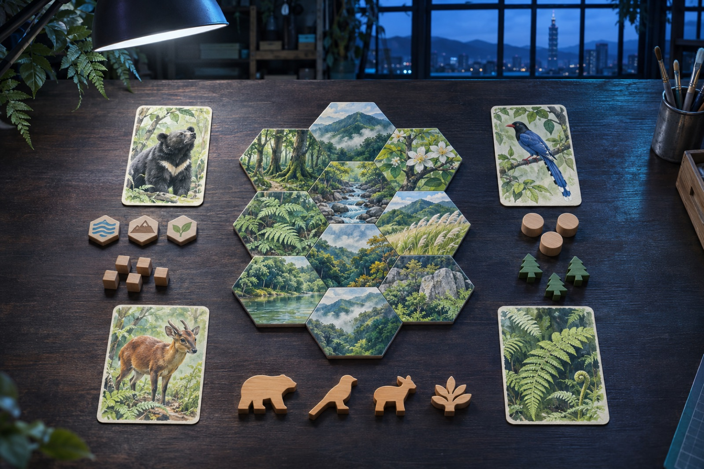

贊助紀錄詳情
我的方案
標準單入組
- 帆布包 × 1
- 專屬編號吊牌
- 保養布一條
- 終身維修服務
顏色募資結束後會寄送填寫表單，屆時再選即可，不影響現在的贊助。
- 方案金額
- NT$ 2,280
- 額外支持
- NT$ 0
- 總計
- NT$ 2,280
預計出貨2027 年 2 月
收件資訊
陳柏宇預設地址
出貨前會寄送通知，可更改收件地址。
生產與交付進度
以下是這個專案的生產里程碑。每完成一個階段我們都會更新，任一階段延遲超過 14 天，平台會主動通知你。
-
里程碑 1｜設計定版
更新 09/02第七版打樣通過，肩帶襯墊厚度從 3mm 調整為 5mm。
-
里程碑 2｜樣品確認
更新 10/14三個顏色的量產樣已完成，墨綠色因染缸批次差異微調配方。
-
里程碑 3｜量產備料
更新 11/08布料已進廠 2,400 碼，五金待 11/20 到貨。
-
里程碑 4｜出貨
依贊助順序分批出貨，出貨前會寄送通知信。
取消贊助
募資期間內可於「我的贊助」自行取消並全額退款；募資結束後因已進入備料，恕無法取消。
這筆贊助可以在 募資結束前取消，NT$ 2,280 會在 7 個工作天內原路退回你的信用卡（末四碼 5038）。
設計稿狀態示意
其他 4 種贊助狀態在這頁的樣子
正式畫面是「募資中」的帆布包。每個狀態畫縮小版的主控台（專案摘要），加上這個狀態才有的內容；名稱、方案、金額、日期與狀態說明照個人頁贊助紀錄卡片 2～4。
已達標待生產
Notion 沒有這種狀態的贊助紀錄，這裡只示範徽章與說明，不編專案。收件資訊照樣可以修改。
募資已結束並達標，提案者正在準備生產；開始生產後，進度會更新在生產與交付進度。
取消贊助
募資結束後因已進入備料，恕無法取消。
生產中
生產與交付進度不畫時間軸，只用「目前進度：量產備料 ‧ 預計 2027/04 出貨」這一句表示目前的階段；Notion 沒有這個專案的里程碑，不補節點日期與更新，也不沿用帆布包的里程碑。出貨前收件資訊都可以修改。

已出貨
只顯示物流單號，不做查詢連結（物流追蹤串接是 Notion「本次不包含」的項目）；不顯示取消贊助。

島嶼生態｜
山貓遊戲設計
物流資訊
- 寄出日期
- 物流業者
- 宅配通
- 物流單號
- 2714-8830-xxxx
收件資訊
已經寄出，收件資訊無法再修改。
募資失敗 ‧ 已退款
收件資訊、生產與交付進度、取消贊助都不顯示；整塊降一階，和個人頁卡片 4 一樣。

回到土裡的
循環物料實驗室
款項已於 原路退回
這個專案未達成目標金額，所有款項已全額退回贊助者。
付款資訊
- 退款
- NT$ 1,280， 原路退回
取消贊助確認對話框
按下「取消贊助」會出現的對話框，畫在這裡方便檢查。